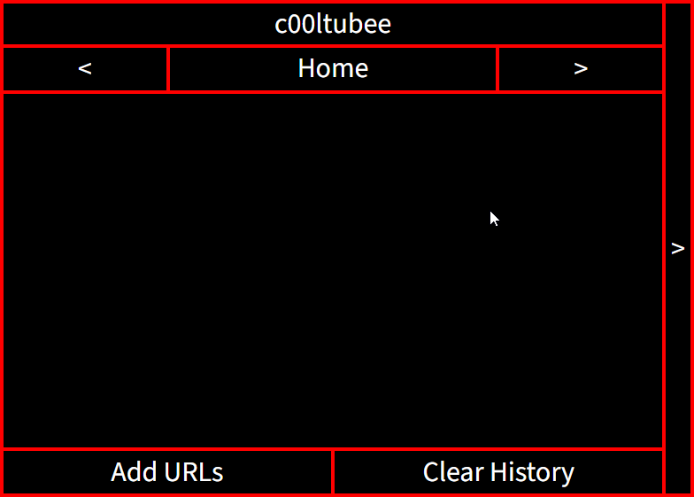
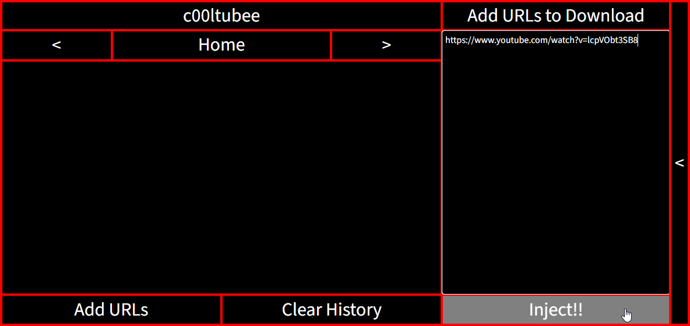
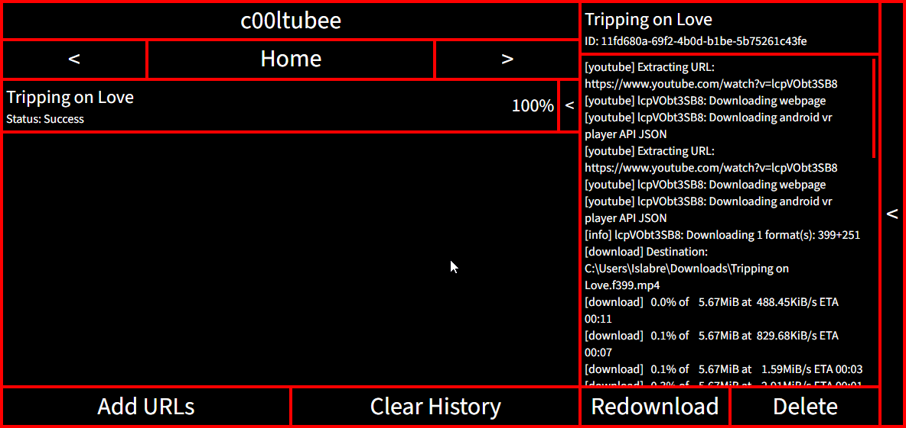
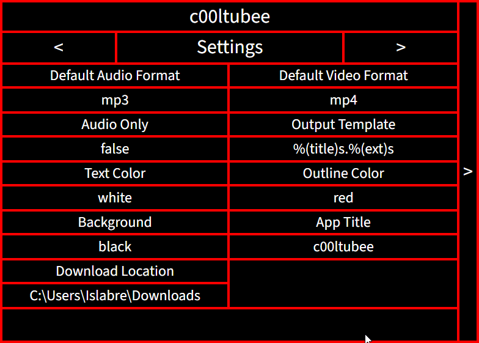

Intro
c00ltubee (spell it like cool tube) is a Youtube Downloader with c00lgui appearance, powered by yt-dlp, ffmpeg and quickjs.
Download latest release
MacOS version not available for now.
Other releases
See GitHub Releases for other releases.
Features
- Everything essential for a downloader: status, retry, cancel, redownload, and history.
- Customization: Customize text and outline color, background, and your app title. Color and background can be customized as long as CSS allow it!
- Settings for internal downloader (yt-dlp): default audio/video format, audio only mode, download location, and output template.
- Settings are applied right after modification.
- No ads and subscriptions.
- Free (as in no cost)!
Screenshot




Useful information
For settings:
- To apply setting that use text input, press Enter.
- If you accidently modify a text setting without saving, you can press Esc to revert it back to its original value.
Credit
Thanks to my friend for inspiration! See the GitHub page for other credit.